Overview
In this homework, we implemented a simple rasterizer capable of drawing triangles, supersampling for antialiasing, applying hierarchical transforms, and performing texture mapping with antialiasing. By working through this assignment together, we learned about the intricacies of vector graphics rendering, particularly how to manage and manipulate pixels and coordinates to achieve precise outputs on the GUI. The challenges of implementing Task 2 (supersampling), which could only be done with a proper understanding of the downsampling relationship between the sample buffer and frame buffer, helped further my understanding of how graphics are rendered at a low level, making this a great learning experience.
Section I: Rasterization
Part 1: Rasterizing single-color triangles
Approach and ImplementationThe process of "rasterization" is essentially flattening a triangle (2D geometric shape) into a 1D vector of framebuffer pixel values. We first assessed the 3 vertices of our triangle, and computed a "bounding box" by computing the minX, minY, maxX, and maxY. From there, we iterate over all the pixels within the bounding box, and for each (x,y) coordinates, we perform a point-in-triangle test from lecture. If the coord is inside OR on (made our check >= to account for this edge case) the triangle, we fill the framebuffer with the corresponding color.
Problems and SolutionsThe main issue in this section was not coloring the outline of the image correctly. When we did our point-in-triangle test for a given point (x,y), using the formula from the lecture slide, we simply calculated L_0, L_1, and L_2 and checked if all 3 are greater than 0, in which case the point is inside the triangle and fill_pixel() should be called. This rendered the correct black dragon shape, however, it lost the outline. After a quick Google search, we found that L_0, L_1, and L_2 are 0 for points on the outline, so a quick change from >0 to >=0 resolved the issue and rendered the red border.
DeliverablesOur algorithm is no worse than one that checks each sample within the bounding box of the triangle because but we did make one main optimization to improve our algo from that time complexity. To ensure that we always stay within image bounds, we have additional checks on minX, minY, maxX, and maxY after they are assigned in order to floor/ceil their values if they're out of bounds. This optimization works because if we find that a coordinate is out of bounds, we don't even need to check it since it definitely won't be in the triangle (and thus not colored), we can simply move on to the next coordinate.
|
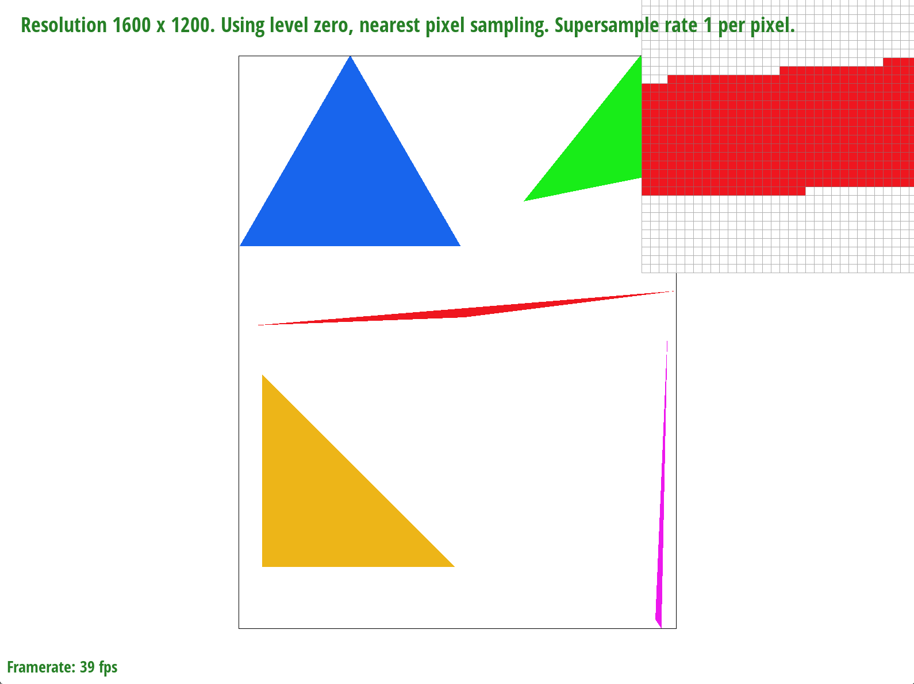
|
Part 2: Antialiasing triangles
Approach and Implementation
The motivation behind even making a supersampling algorithm is to mitigate the problem of aliasing (or "jaggies") that appeared in the images from Task1, which only had 1 sample per pixel.
The result ends up being an image with smoother edges (less jaggies) since with more samples, the image is higher resolution, but we downsample to the original size anyway, so it appears to be clearer.
(eg. from HW a sampling rate of 16 means 1000x1000 pixels becomes 4000x4000 samples, but we downsample back to 1000x1000 for the final result anyway.)
The way we achieve supersampling is by choosing a sampling rate (a perfect square) to indicate how many samples we want to take per pixel, sample at all those various locations,
and then average out those values to determine an average color value to assign overall to the corresponding pixel.
We encountered the most problems with this section because, like I mentioned in the general overview,
it required a good understanding of both the sample buffer and framebuffer indicies, and how to convert between them (downsampling).
More specifically, we struggled to relate the 2D framebuffer, which were the colors and pixels actually being rendered on the screen with the 1D sample buffer,
which was a contingous array holding all supersamples within the pixels.
Although we understand how to index into the sample buffer when the supersampling rate was 1,
we initially struggled to understand how the expression from the spec (y*width+x) scaled as the sampling rate changed.
However, as vusual learners, we found that drawing out a simple example helped. We drew out a 3x2 grid and set the sampling rate to 4 samples/pixel,
picked and arbitrary point, and tried to come up with a formula to find its sample buffer index given only its (x,y) coordinates.
This was a crucial step, as it allowed us to index into and populate the sample buffer correctly.
Another issue we had was incredibly slow supersampling. A nested double for loop already has quadratic time complexity, which isn't optimal to begin with,
but in addition, our initial bounds for x were 0->width and y were 0->height. This meant that our initial approach was iterating over every single pixel in the image,
running the point in triangle test on it, and coloring it if its inside the triangle. We quickly realized this was incredibly inefficient and
unecessary—-there was no need to check every pixel in the image, we only need to check the pixels from the minimum X coord and the maximum Y coord of the triangle's verticies
to capture every possible pixel coordinate that could possibly be in the triangle. Using this reasoning, we optimized our bounds for x to minX->maxX and y to minY->maxY.
The code for supersampling was similar to normal sampling, except that in addition to iterating over the pixels in the bounding box (double for loop), we also iterated over all the supersamples within each pixel (nested double for loop), calculated the exact position for the current sample, check if it's inside the triangle, and then colored the pixel accordingly. We used an additional data structure for this called the sample_buffer, which is is it organized such that all samples for a pixel are in a contiguous block. For example, if the sample rate is 16, that means we sample 4x4 so 16 times per pixel and save each of these supersamples at consecutive indices in the sample_buffer. From there, we need to downsample this higher resolution back to the normal number of pixels in resolve_to_framebuffer() which we did by averaging the color for all the samples for a given pixel in the sample buffer.
|
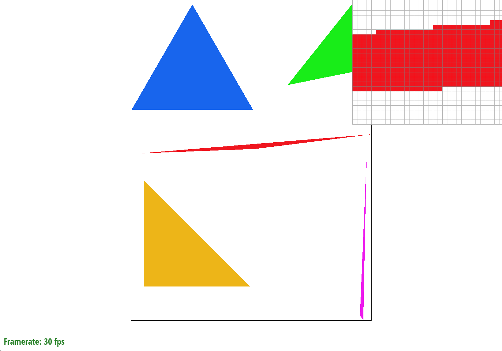
|
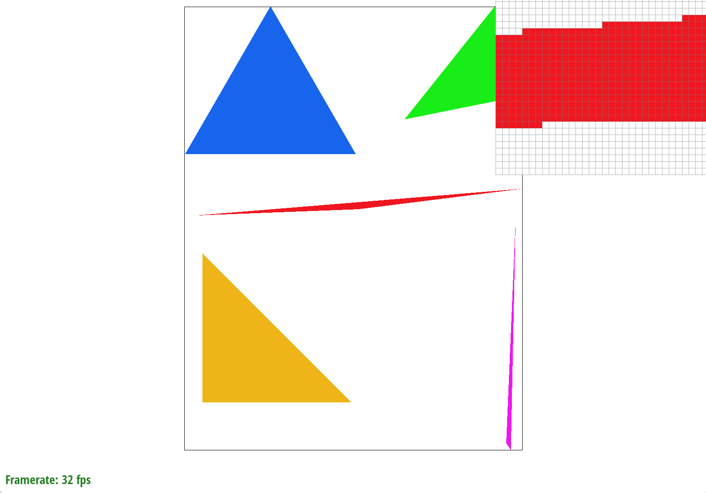
|
|
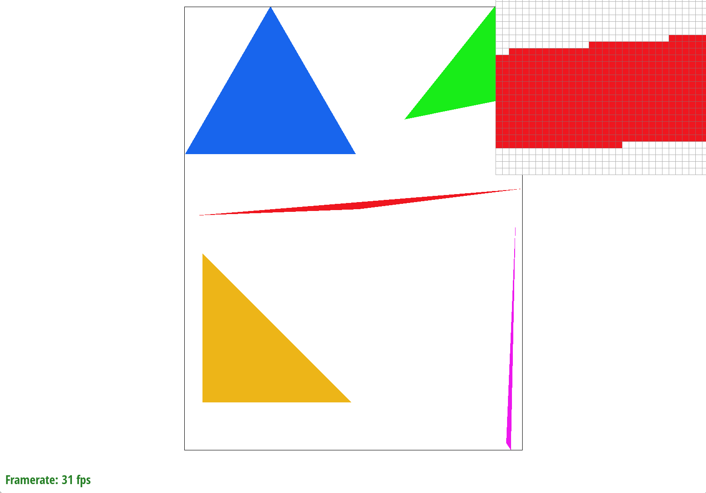
|
Part 3: Transforms
Approach and Implementation
To implement the 3 transformations, rotation, scaling, and translation, we simply used the formulas provided in lecture.
For rotation we used the matrix:
[[cos(rad), -sin(rad), 0],
[sin(rad), cos(rad), 0],
[0, 0, 1]]
For scaling we used the matrix,
[[sx, 0, 0],
[0, sy, 0],
[0, 0, 1]]
For translation we used the matrix,
[[1, 0, dx],
[0, 1, dy],
[0, 0, 1]]
Since this section was essentially just using formulas from lecture and plugging in our values, we didn't run into too many hiccups. The only thing of note was the degrees to radians conversion. We did not realize that the inputs were in degrees, but the cos() and sin() functions in C++ only take in radians. Since we initially directly plugged in the degree value, we got a robot whose head was slightly over-rotated. To remediate this, we simply multiplied the degrees by (PI/180) to get the radians and used that value instead in our trignometric functions.
DeliverablesWe made our robot do a jumping jack in mid-air! His arms are outstretched upwards and his legs are outstretched towards the ground.
|
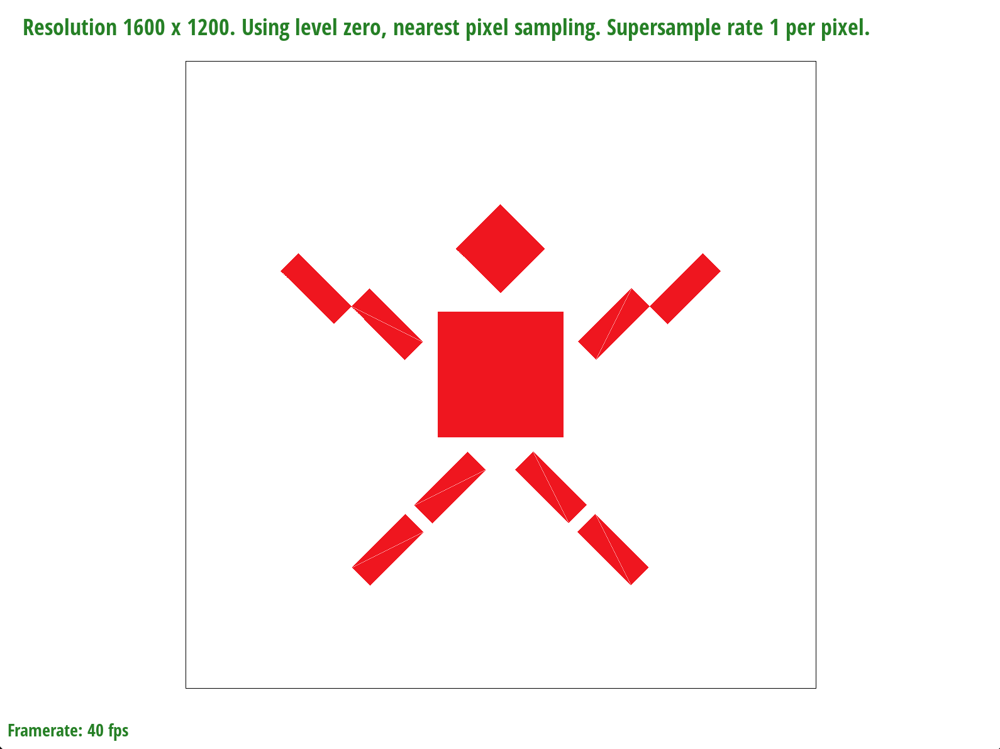
|
Section II: Sampling
Part 4: Barycentric coordinates
Approach and ImplementationWe found the parameters for the bounding box (the minimum and maximum x and y values) also limited by the width and height of the space. To implement Barycentric interpolation, we iterated through each (x, y) in the bounding box and calculated the weights alpha, beta, and gamma, each corresponding to one of the three vertices of the triangle defining the bounding box. By using the weights to interpolate the given vertices into a singular point, if the weights were all non-negative, we knew to interpolate the colors of the three vertices and fill the corresponding (x, y) pixel with that interpolated color.
Problems and SolutionsWe ran into quite a few issues with figuring out how to make the color non-black. We found that as long as we multiplied by 255 for each of r, g, b in resolve_to_framebuffer(), we would not need to scale the color values by 255 in each other function. We also had to be careful about the bounds we chose for the bounding box and the relevant minimums and maximums.
DeliverablesBarycentric coordinates are a coordinate system commonly used in computer graphic and geometry to express the position of a point within a triangle based on the verticies of that triangle. Instead of the typical (x, y) coordinates, a point in barycentric coordinates is described by 3 numbers (alpha, beta, and gamma) which each represent the weight of one of the traingle's verticies in determining the point's position. The key idea is that any point inside or on a triangle can be represented as a weighted everage of the triangle's verticies. alpha, beta, and gamma and non-negative and add up to 1.
As an example, a point located exactly at the red vertex would have the red point weighted 1, indicating it's 100% infuenced by the red vertex and not at all by the other 2. On the other hand, a coordinate like x might have the green point weighted more than the other 2.
Use case: Barycentric coordinates are particularly useful in graphics for shading and texture mapping (as we saw with this homework), where it is important to interpolate values across the surface of a triangle.
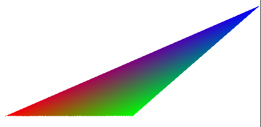 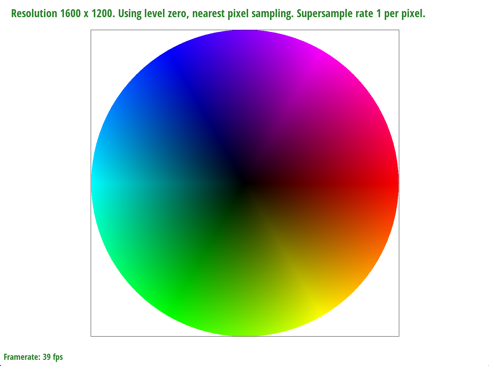
svg/basic/test7.svg
Part 5: "Pixel sampling" for texture mapping
Approach and ImplementationWe split pixel sampling into nearest-pixel sampling and bilinear sampling. For nearest-pixel sampling, we took the nearest surface coordinate to the given texture coordinate and set the texture to that surface coordinate's color. For bilinear sampling, we performed a series of linear interpolations on a 2D space to produce a texture value using the 4 nearest surface coordinates.
Problems and SolutionsWhile nearest-pixel sampling was straightforward, we did have to think about how bilinear sampling would work given the data we had. Initially, I had interpolated the given texture coordinate with the surface coordinates, giving me back the exact same texture coordinates. After a homework party, I realized that I should be calculating the texels for each surface coordinate and interpolating those texels themselves to get a resulting texture. I used the lecture slides and the image at this link (https://www.researchgate.net/figure/The-bilinear-interpolation-grid-Given-a-point-x-y-we-interpolate-between-floorx-and_fig1_221437206) to think about why we use linear interpolation and for what use cases we should linearly interpolate, or take essentially a weighted average.
DeliverablesPixel sampling enables sampling using different numbers of surface points surrounding a texture coordinate. In nearest pixel sampling, we choose the one surface coordinate closest to the texture coordinate and use that color as the texture for the texture coordinate. In bilinear pixel sampling, we linearly interpolate, or take the weighted average, of the four surface coordinates surrounding the texture coordinate, using the resulting linear interpolation as the texture of the texture coordinate.
In calculating the pixel sampling, we used Barycentric coordinates (from task 4) to get the relevant texture coordinate (u, v). If the alpha, beta, and gamma parameters were greater than or equal to 0, the point was in the triangle; then, according to the psm, we implemented either nearest-pixel or bilinear sampling. For nearest-pixel sampling, we rounded the (u, v) coordinate and found the texel at (u, v). For bilinear pixel sampling, we found the four nearest surface coordinates and found the linear interpolations between adjacent coordinates' colors, then the linear interpolation between the resulting values to get the final color for the texture coordinate.
Nearest-pixel sampling vs. Bilinear sampling:
|
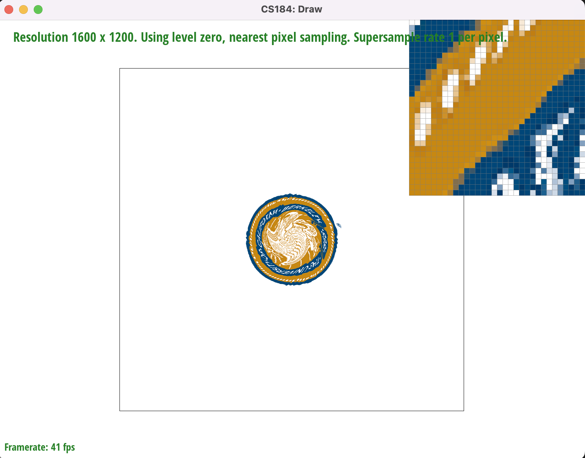
|
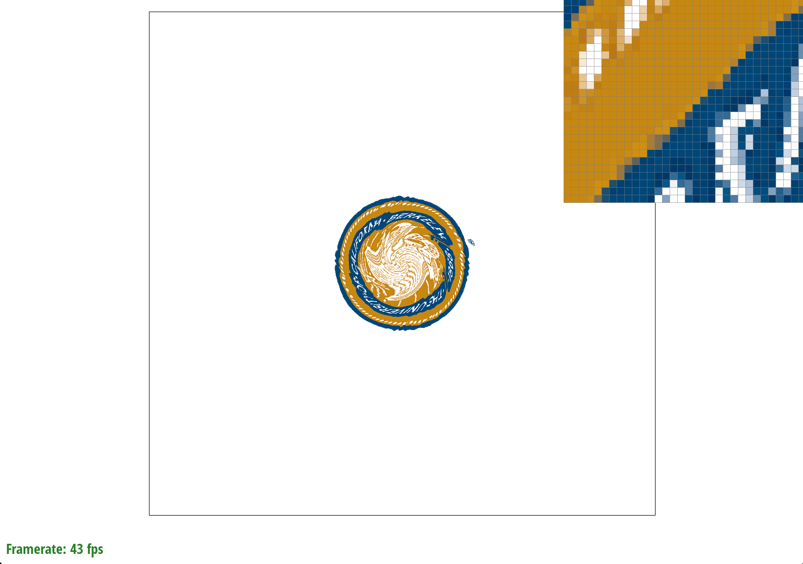
|
|
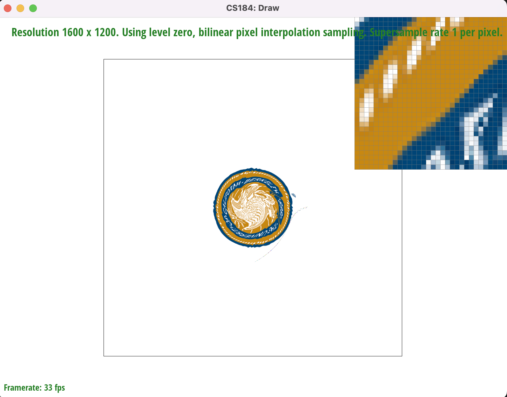
|
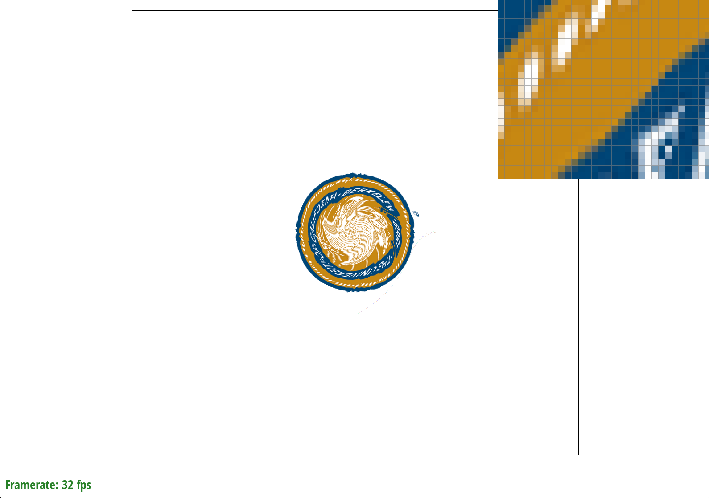
|
Nearest sampling tends to have more jaggies in contrast to bilinear sampling, which produces a smoother blur.
1 pixel supersampling has sharper distinctions between elements of an image since the color distinctions are sharper,
while 16 pixel supersampling tends to have more gradual changes between colors.
Part 6: "Level sampling" with mipmaps for texture mapping
Approach and Implementation
For get_level(), we thought about how to relate the lecture slides to
the given parameters. We first calculated the L variable and then took the square
root, giving us the final mipmap level.
In the sample() method, we thought about in what ways we could best
simplify the 6 combinations of sampling we had. We created a variable, mip_level,
that tracked the mip level d based on the lsm setting. L_ZERO used the basic
mip level 0, but L_NEAREST looked at the nearest mip level to the mip level decimal
value and also clamped the mip level to the bounds [0, mipmap.size()).
We handled L_LINEAR as a separate case, in which we would have two clamped
mip levels and would immediately calculate the linear interpolation between
the two nearest-pixel or bilinear samples.
We also passed in the correct sample parameters SampleParams to the sample()
function using the (u, v) values given in the spec.
It was hard to formulate a way to connect the sample paramters to the sample() function. We also had to discuss the simplest and most effective way in which we could allow for each combination of level and pixel sampling and decided that it would be best to first set the mip level, then perform the pixel sampling method.
Deliverables
Level sampling enables sampling at different mipmap levels, where mipmaps are different resolutions of the same image. Mipmaps are particularly useful
when trying to store a number of resolutions within a finite amount of space; for an image that takes up space N, a mipmap with D levels takes only
4N/3 space.
We used level sampling for texture mapping by considering the three
variations of level sampling. For L_ZERO, we set the mipmap level to 0,
implying that we wanted to use the first, largest mipmap. For L_NEAREST,
we found the closest mipmap level by implementing the helper function
get_level(), which finds the difference vectors to eventually
calculate the mipmap level. For L_LINEAR, we calculated the floored
and ceil-ed mipmap levels and the pixel sampling for each of those
mipmaps, then linearly interpolated the pixel samples with each
other for the resulting image.
When considering L_ZERO, L_NEAREST, and L_LINEAR interpolation for level sampling, L_ZERO is the fastest, then L_NEAREST,
then L_LINEAR. L_LINEAR takes the most space, since it needs to compute the nearest or bilinear
samples for two mipmaps, then take the average.
L_LINEAR actually makes the image look a little grainy when using the psm setting
P_NEAREST, but blurs well when used with P_LINEAR; it seems that trilinear sampling
produces the best blur but takes the most memory. As a result, trilinear sampling
seems to work the best for antialiasing. Nearest level, bilinear interpolation also
produced a very smooth blur, perhaps even better than trilinear interpolation.
Different combinations of pixel and level sampling for sloth.png :
L_ZERO, P_NEAREST: jaggies, visible and unclear boundaries
L_ZERO, P_LINEAR: smoother edges (no jaggies), but sharp distinction between colors (not blurred)
L_NEAREST, P_NEAREST: like L_ZERO, P_NEAREST but with sharper distinctions between colors within shapes
L_NEAREST, P_LINEAR: very smooth blurring (resulting in a slightly fuzzy image), smooth edges (no jaggies)
|
|
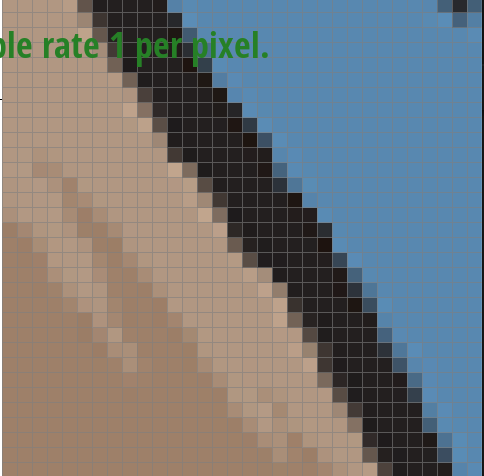
|
|
|
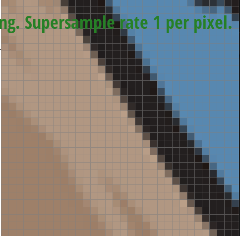
|
|
|
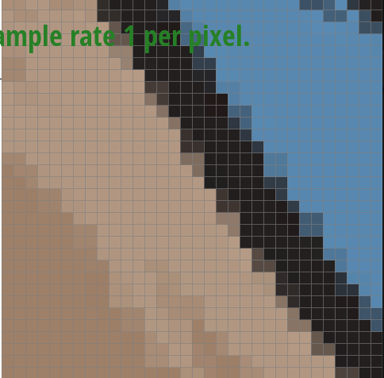
|

|
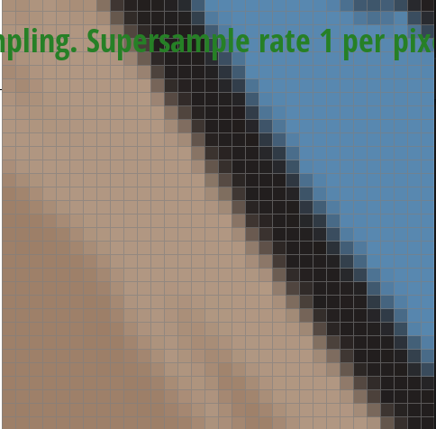
|
Section III: Art Competition
If you are not participating in the optional art competition, don't worry about this section!